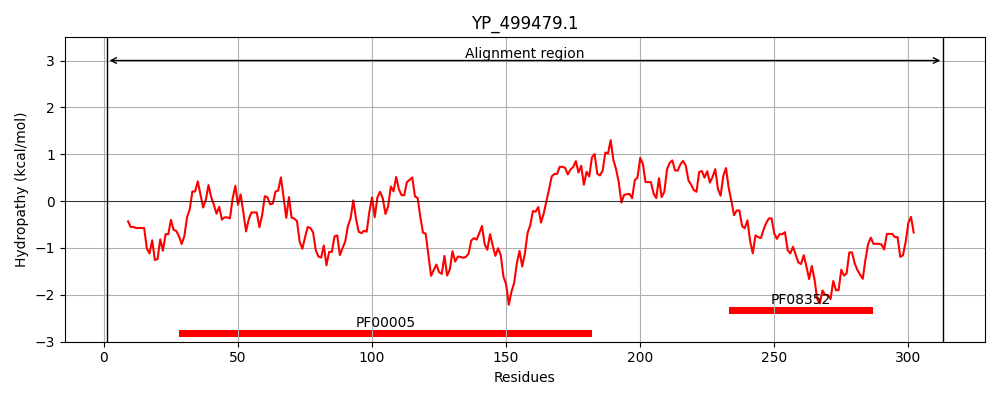

Hit Accession: Q2FZR4
Hit TCID: 3.A.1.5.19
Hit Description: gnl|BL_ORD_ID|13235 gnl|TC-DB|Q2FZR4|3.A.1.5.19 Oligopeptide ABC transporter, ATP-binding protein, putative - Staphylococcus aureus (strain NCTC 8325).
Mach Len: 313
e:0.000000
Query TMS Count : 0
Hit TMS Count: 0
TMS-Overlap Score: 0.000000
Predicted Substrates:CHEBI:7755;oligopeptide
BLAST Alignment:
Score: 1589 , Bit scores: 616 bits, E-value: 0.0e+00, Alignment length: 313, Percentage identity: 100
Query: 1 MKNDEVLLSIKNLKQYFNAGKKNEVRAIENISFDIYKGETLGLVGESGCGKSTTGKSIIKLNDITSGEILYEGIDIQKIRKRKDLLKFNKKIQMIFQDPYASLNPRLKVMDIVAEGIDIHHLATDKRDRKKRVYDLLETVGLSKEHANRYPHEFSGGQRQRIGIARALAVEPEFIIADEPISALDVSIQAQVVNLLLKLQRERGITFLFIAHDLSMVKYISDRIAVMHFGKIVEIGPAEEIYQNPLHDYTKSLLSAIPQPDPESERSRKRFSYIDDEANNHLRQLHEIRPNHFVFSTEEEAAQLRENKLVTQN 313
MKNDEVLLSIKNLKQYFNAGKKNEVRAIENISFDIYKGETLGLVGESGCGKSTTGKSIIKLNDITSGEILYEGIDIQKIRKRKDLLKFNKKIQMIFQDPYASLNPRLKVMDIVAEGIDIHHLATDKRDRKKRVYDLLETVGLSKEHANRYPHEFSGGQRQRIGIARALAVEPEFIIADEPISALDVSIQAQVVNLLLKLQRERGITFLFIAHDLSMVKYISDRIAVMHFGKIVEIGPAEEIYQNPLHDYTKSLLSAIPQPDPESERSRKRFSYIDDEANNHLRQLHEIRPNHFVFSTEEEAAQLRENKLVTQN
Sbjct: 1 MKNDEVLLSIKNLKQYFNAGKKNEVRAIENISFDIYKGETLGLVGESGCGKSTTGKSIIKLNDITSGEILYEGIDIQKIRKRKDLLKFNKKIQMIFQDPYASLNPRLKVMDIVAEGIDIHHLATDKRDRKKRVYDLLETVGLSKEHANRYPHEFSGGQRQRIGIARALAVEPEFIIADEPISALDVSIQAQVVNLLLKLQRERGITFLFIAHDLSMVKYISDRIAVMHFGKIVEIGPAEEIYQNPLHDYTKSLLSAIPQPDPESERSRKRFSYIDDEANNHLRQLHEIRPNHFVFSTEEEAAQLRENKLVTQN 313 | Protein Hydropathy Plots: |
|---|
|  | |
Pairwise Alignment-Hydropathy Plot:
|
|---|
|